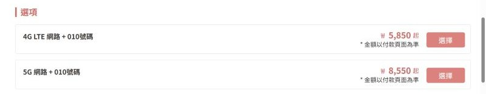
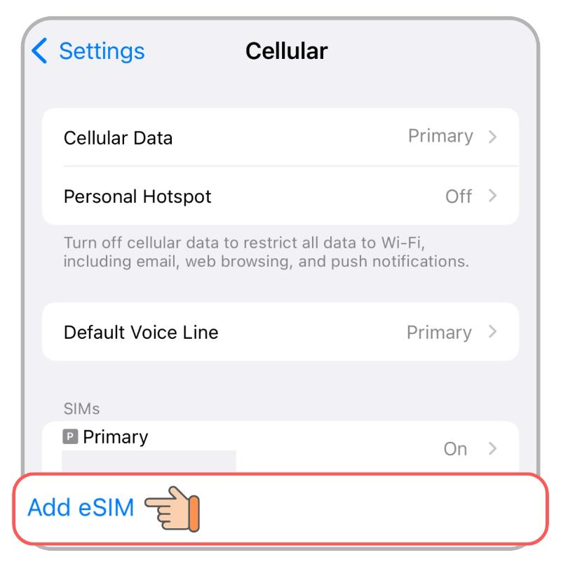
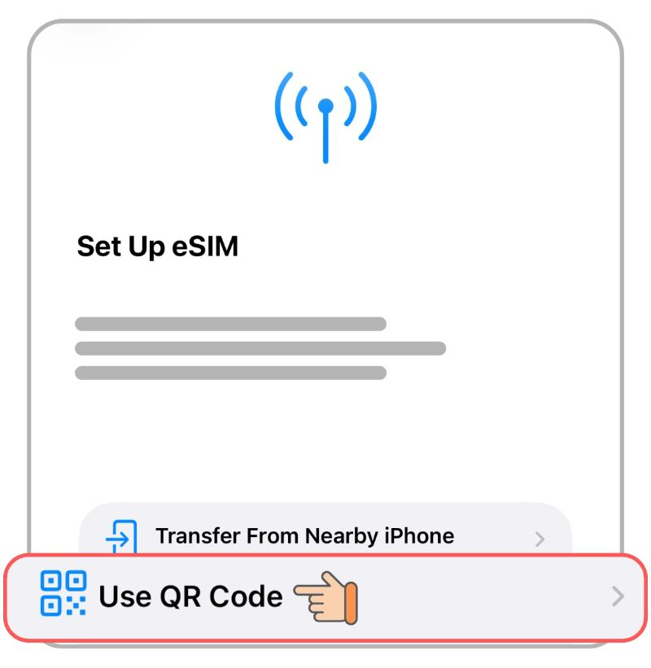
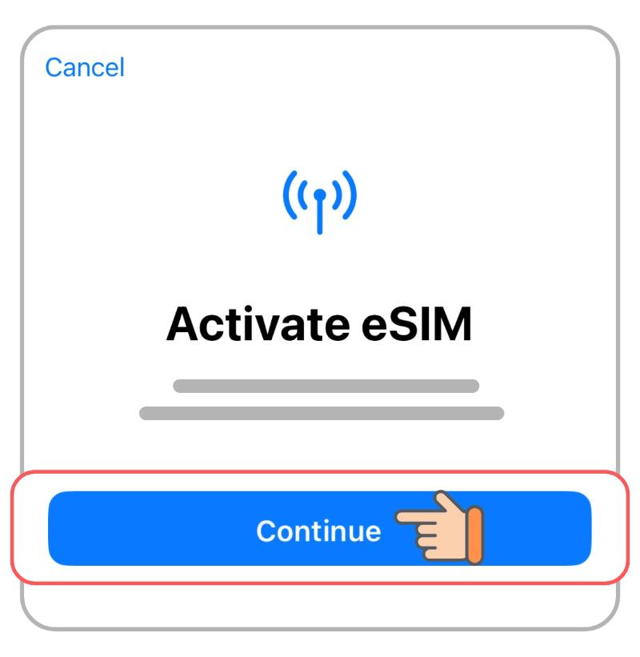
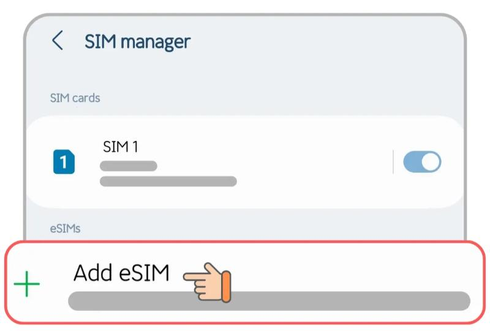
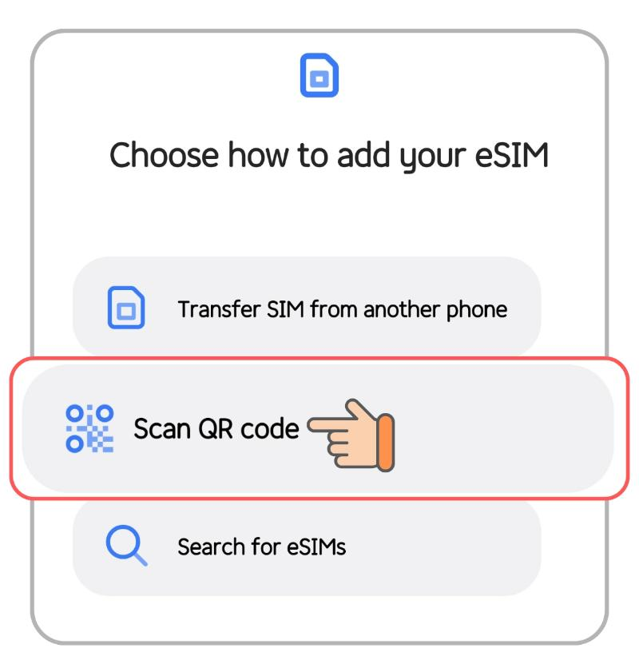
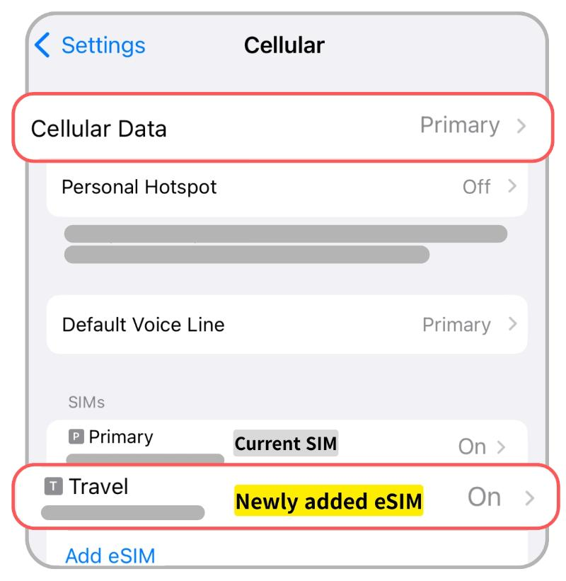
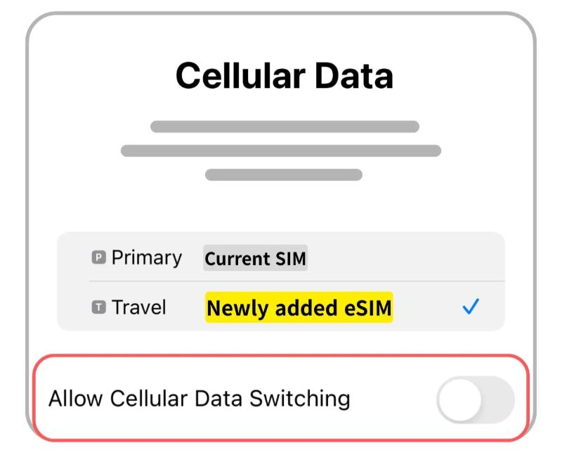
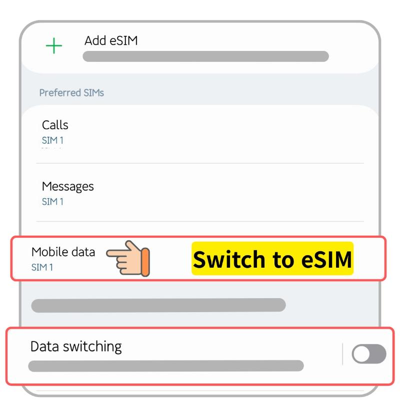

韓國旅遊簡報 ④ ・ 11/18（三）– 11/24（二）
Link Korea SKT eSIM
購買、安裝與啟用攻略
SKT 原生網路吃到飽・附 010 韓國門號・ChatGPT／Claude 可正常使用・餐廳候位機台能收叫號簡訊
SKT 4G LTE＋010 號碼
7 天 ×2 已購買
1 月買過同款
2026/10/19 整理 ・ 依 Link Korea 官網商品頁、官方安裝教學與 1 月訂購信 ・ 價格與規定以官網付款頁為準
方案重點 ・ SKT 韓國原生 eSIM＋010 韓國電話號碼
選 4G LTE 就夠用
| 項目 | 4G LTE（推薦） | 5G |
|---|---|---|
| 價格（起） | ₩5,850 | ₩8,550 |
| 最高網速 | 100 Mbps | 200 Mbps |
| 降速 | 吃到飽不降速 | 吃到飽不降速 |
| 熱點分享 | 不限量 | 每天 1GB |
| 010 號碼 | 有 | 有 |
「起」是最短天數的價格，7 天實際金額以付款頁為準。可以先裝好再出發；不能線上延長，用完要重買。

為什麼選 4G
5G 在室內、地鐵、人多處會切回 4G；4G 熱點不限量，可分享給同行者。
天數怎麼算
手機連上 SKT 訊號才開始計時，每 24 小時算 1 天。例：1/1 09:00 啟用，第 1 天到 1/2 09:00 結束。
來源與截圖：linkkorea.co.kr › SKT 韓國原生 eSIM（2026/10/20 擷取）・ 1 月訂單：SKT 4G LTE 數據＋通話 eSIM，2 天 ×2
下單前後
先確認 3 件事，再收憑證信
① 手機支援 eSIM
撥號畫面輸入 *#06#，有顯示「EID」才支援（MEID 不算）。
② 一張 eSIM 只能裝一台
QR 碼最多掃 10 次；用手機內建設定安裝，不要用第三方 App。
③ 寄出後不能退款
憑證約 1 小時內寄到；30 分鐘沒收到，先看垃圾信箱，再找客服。
eSIM 電子憑證
eSIM - QR Code
租賃合約編號
●●●●●●●●●●
電話號碼
010●●●●●●●●
(iPhone) SM-DP+ 地址
RSP-●●●●
(iPhone) 啟動碼
0500●●●●
(Android) 啟動碼
LPA:1$●●●●
示意：依 1 月憑證信版面重畫。紅字兩欄之後護照驗證要用。
來源：linkkorea.co.kr 商品頁「注意事項」・ 2026/1/14 [LINK KOREA] eSIM 憑證信
我們的 eSIM ・ 10/23 已購買、憑證已收到
兩支 010 號碼與驗證資料
eSIM 憑證 ① ・ Hank
010-••••-••••
| 驗證要填 | 內容 |
|---|---|
| 租賃合約編號 | •••••••••• |
| 電話號碼 | 010•••••••• |
eSIM 憑證 ② ・ 同行者
010-••••-••••
| 驗證要填 | 內容 |
|---|---|
| 租賃合約編號 | •••••••••• |
| 電話號碼 | 010•••••••• |
驗證時：合約編號＋自己的號碼＋自己的護照
兩張共用同一個合約編號，各自用自己的號碼和護照驗證。skroaming.com/passport，每天 08:00–22:00。
方案
SKT 4G LTE＋010 ・ 7 天吃到飽 ・ 熱點、撥打、接聽皆可 ・ 12/22 前要開始使用
來源：2026/10/23 [LINK KOREA] eSIM 憑證信 ・ 訂單 RZ•••••••••• ・ QR 碼與啟動碼只在憑證信裡，不放簡報
出發前在台灣安裝 ・ iPhone
設定 › 行動服務 › 加入 eSIM

① 加入 eSIM

② 使用 QR 碼

③ 掃描後按「繼續」
安裝前：連 Wi‑Fi 或行動數據（不能用熱點），iOS 更新到最新；QR 碼開在另一台裝置。
等待：約 5 分鐘，出現「行動網路設定完成」按「完成」。
出發前：新 eSIM 若是開啟先關掉；顯示「啟用中」是正常的。
掃不到：改手動輸入憑證上的 SM-DP+ 地址與啟動碼。
不要刪除 eSIM
刪了無法重裝、補發或退款。
截圖：Link Korea 官方安裝教學 iPhone（with QR Code），2026/10/20 擷取 ・ 畫面為英文版 iOS
出發前在台灣安裝 ・ Samsung Android
設定 › 連接 › SIM 卡管理員

① 新增 eSIM

② 掃描 QR 碼
安裝前：一樣先連 Wi‑Fi 或行動數據（不能用熱點）。
等待：按「新增」後約 3–5 分鐘。
出發前：出現「驗證失敗」是正常的，先把新 eSIM 關閉，不要刪除。
掃不到：選「輸入啟用碼」，貼上憑證的 Android 啟動碼（LPA:1$ 開頭整串）。
其他品牌
選單名稱不同，找「SIM／eSIM」設定即可。
截圖：Link Korea 官方安裝教學 Android（Samsung - with QR Code），2026/10/20 擷取 ・ 畫面為英文版
11/18 抵達仁川機場後
開啟 eSIM，行動數據改用它

iPhone ① 打開新 eSIM

iPhone ② 行動數據選它

Samsung：行動數據 → eSIM
通話／簡訊：預設號碼選台灣號碼或新 eSIM 都可以。
切換行動數據保持關閉，台灣門號的數據漫遊也關閉。
右上角出現 4G／LTE 就能上網
沒訊號：開關飛航模式 6–7 次。連上 SKT 的那一刻開始計算天數。
截圖：Link Korea 官方安裝教學 iPhone／Samsung「eSIM installation completed」，2026/10/20 擷取 ・ 憑證信注意事項 08
抵達後 ・ 開通 010 門號的語音與簡訊
要收簡訊，先做護照驗證
1
入境、eSIM 連上 SKT 訊號後，打開 skroaming.com/passport
2
輸入憑證上的「租賃合約編號」和「電話號碼」，再填護照上的姓、名、護照號碼、生日、國籍。
3
驗證完立即開通，送 ₩1,320 通話額度（約可撥 5 分鐘）。
4
順手領大創 ₩1,000 券：skroaming.com/roaming/coupon，同樣輸入合約編號與號碼，10 天內用完。
費用
接電話、收簡訊不收費。撥打額度用完可到 skroaming.com/reservation/charging 加值。
線上驗證 08:00–22:00
要通關後才能做；時段外到機場 SKT 漫遊中心辦。驗證失敗：姓名去掉空格與符號再輸入。
來源：linkkorea.co.kr 商品頁「語音通話／簡訊」與「SKT 優惠活動」・ SKT 官方護照驗證頁 skroaming.com/passport（2026/10/23 查詢）
010 門號怎麼用
收得到一般簡訊，過不了實名認證
可以
- 餐廳門口候位機台留號碼、收叫號簡訊
- 店家或計程車司機打來聯絡
- 預約時留聯絡電話
不行
- NAVER、KakaoTalk 等實名認證簡訊
- OTP 驗證碼、App 帳號註冊
- 韓文版 CatchTable、Tabling 註冊
排隊順序
先查 CatchTable Global（Email 註冊，不需韓國門號）→ 只有店門口機台時輸入 010 門號 → 機台不收時請店員協助：
한국 전화번호가 없는데, 대기 등록할 수 있을까요?
來源：linkkorea.co.kr 商品頁「門號限制」・ VISITKOREA CatchTable Global 介紹 ・ 演唱會等人潮處訊號可能不穩（官網提醒）
連不上網的時候
照這個順序排查
① 千萬別刪 eSIM
刪除後不能重裝、補發或退款。
② 檢查開關
新 eSIM 有開啟、「行動數據」選的是 eSIM。
③ 重開機、開關飛航模式
飛航模式開了再關，重複 6–7 次。
④ 安裝時「無效的代碼」
重開機後再掃一次，確認 eSIM 有沒有已經加進去。
還是不行：回台灣前就聯絡客服
LINE、KakaoTalk、WhatsApp（官網右下角對話框）或 linkkorea@linkkorea.co.kr，附上設定截圖。回國後才聯絡不受理退換。
來源：linkkorea.co.kr 商品頁「退改政策與售後聲明」・ 憑證信注意事項 03、08、09 ・ 官方安裝教學